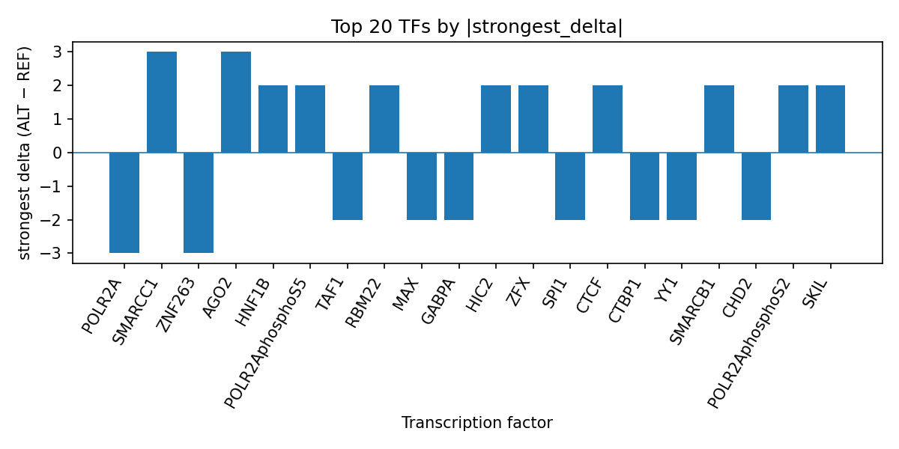

Author: snv-tf-researcher
We prioritized rs3772382 (chr3:24143816 C>G), a GWAS variant associated with leukemia inhibitory factor receptor measurement, for AlphaGenome transcription factor (TF) ChIP-seq analysis on the basis of its reported effect size (abs_beta 4.908; p=9×10^-7). AlphaGenome provides computational predictions rather than experimental measurements, and the output was used here to summarize putative allele-dependent TF binding differences. Across the predicted TF ChIP-seq tracks, the ALT allele was associated with both inhibitory and promotive effects, with notable inhibition for POLR2A and CTCF and promotion for AGO2, SMARCC1, ZBTB7A, and others. Literature connected to leukemia inhibitory factor receptor biology and related gp130/LIF signaling provides context for interpreting these predictions, but experimental validation is required to determine whether these computational signals reflect biological regulation in the relevant trait context [1-10]. The results prioritize rs3772382 for follow-up and suggest allele-sensitive effects on transcriptional regulation.
Leukemia inhibitory factor receptor (LIFR) participates in cytokine signaling pathways that are recurrently discussed in studies of reproductive biology, inflammation, cancer, and other traits [1,4-10]. Prior work has linked LIF/LIFR-related signaling to implantation-related phenotypes, endometrial receptivity, and disease-associated signaling contexts, indicating that this pathway is biologically relevant across multiple systems [1,4,8-10]. In addition, GWAS studies have identified regulatory variants in regions related to LIFR or neighboring cytokine receptor loci, supporting the broader idea that noncoding variation can modulate gene regulation relevant to phenotype [11,12].
In this manuscript, we interpret AlphaGenome SNV-to-TF ChIP-seq predictions for rs3772382, a noncoding GWAS variant annotated as an intron_variant, downstream_gene_variant, 3_prime_UTR_variant, NMD_transcript_variant, non-coding_transcript_variant, and non-coding_transcript_exon_variant. Because the variant was selected by effect size, it may be in linkage disequilibrium with the true causal variant, so the results should be treated as prioritization rather than proof of causality. AlphaGenome predictions are computational and require experimental validation.
The queried variant was rs3772382 (chr3:24143816 C>G), selected because of its reported GWAS effect size (abs_beta 4.908) for leukemia inhibitory factor receptor measurement. The variant annotation included intronic and other noncoding consequences, and no nearest genes were provided in the input record.
AlphaGenome was used to generate predicted TF ChIP-seq effects for the reference-to-alternate substitution. These outputs are computational predictions, not direct binding measurements. We summarized the TF-level predictions using the provided ranked effects and the reference run output table top_tf_effects.tsv, which is the run-level file that aggregates the top TF predictions used in this manuscript. The end-to-end workflow for variant retrieval, annotation, prediction, summarization, and manuscript synthesis is shown in Figure 1 (Figure 1).
Figure 1. Workflow overview for the snv-tf-researcher analysis pipeline. The figure summarizes variant selection, annotation, AlphaGenome TF ChIP-seq prediction, TF-level ranking, literature retrieval, and manuscript generation.
The strongest predicted effect across TF ChIP-seq tracks was observed for POLR2A, which showed an overall inhibited direction across 44 tracks, with the strongest single-track delta of -3.0 in H54. Additional strong inhibitory signals were predicted for ZNF263, CHD2, YY1, CTBP1, ZBTB17, GABPA, SPI1, MAX, TAF1, ZNF600, CBFA2T3, ZNF189, ELF4, CREM, EGR1, and several others. By contrast, several TFs were predicted to be promoted by the ALT allele, including AGO2, SMARCC1, ZBTB7A, SKIL, POLR2AphosphoS2, SMARCB1, HNF1B, ZFX, HIC2, RBM22, POLR2AphosphoS5, HMGA2, and RFX1. These results are summarized in the run-level table top_tf_effects.tsv and visualized in the ranked bar plot (Figure 2).

Figure 2. Top transcription factors at rs3772382 ranked by absolute predicted ALT-vs-REF ChIP-seq delta from AlphaGenome. Bars show the strongest signed delta per TF across predicted tracks; positive values indicate promoted binding and negative values indicate inhibited binding.
The ranked predictions indicate that rs3772382 may alter binding in a broad regulatory context rather than affecting a single TF exclusively. In particular, POLR2A and CTCF exhibited broad track coverage with mixed but net inhibited or weakly positive average trends, whereas several TFs showed single-track, high-magnitude positive or negative effects. Because these are model outputs, they should be interpreted as hypotheses for downstream testing.
The AlphaGenome results prioritize rs3772382 as a candidate regulatory variant with predicted effects on multiple TF ChIP-seq tracks. The inhibited POLR2A signal is notable because POLR2A and POLR2A phospho-state tracks are associated with general transcriptional activity, although the present output remains a prediction and does not establish functional consequence. Likewise, CTCF, YY1, and MAX appear among the more frequent predicted targets, suggesting that the locus may influence a broader regulatory architecture rather than a single isolated factor.
The literature included with this query supports biological interest in the LIF/LIFR axis. For example, studies have reported altered LIF expression in endometrial receptivity contexts and co-culture settings [1,4,11], dysregulated LIF or LIFR-related signaling in adenomyosis and fibroid-related analyses [9,12], and LIFR associations in cancer and inflammatory phenotypes [2,3,5-8,10]. These reports are consistent with the interpretation that noncoding variation near a LIFR-relevant locus may be worth follow-up, but they do not validate rs3772382 specifically. Experimental assays will be required to establish whether the predicted TF changes occur in the relevant cellular context and whether they translate into altered LIFR-associated biology.
This analysis is limited to computational AlphaGenome predictions, which are not experimental measurements. The variant was selected by effect size, so rs3772382 may be in linkage disequilibrium with the true causal variant. The available output does not establish the target gene of the regulatory signal, the causal cell type, or whether the predicted TF effects occur in vivo. In addition, literature cited here provides contextual support only; it does not directly validate the specific variant, predicted TF shifts, or the trait mechanism. Experimental validation is required.
Geçkil ÖF, Karaoğlan Ö, Kuyucu Y, Ürünsak İF. The effects of endometrial injury on endometrial receptivity in recurrent implantation failure. J Reprod Immunol. 2026;175:104897. PMID: 42030865. doi:10.1016/j.jri.2026.104897
Mohammed Saleh N, AlChalabi R, Issa Y, Nassurat S. Dysregulation of MicroRNA-181a-5p Targets TNFAIP3 to Promote MIF-CXCR4 Signaling and Immune Inflammatory Remodeling in Chronic Myeloid Leukemia. F1000Res. 2025;14:1460. PMID: 41953361. doi:10.12688/f1000research.172236.3
Chen Y, Liu Y, He S, Gui J, Wang Y, Zheng M. Heat stroke associated with novel leukaemia inhibitory factor receptor gene variant in a Chinese infant. Open Life Sci. 2025;20(1):20251195. PMID: 41211063. doi:10.1515/biol-2025-1195
Wu C, Cai H, Pu Q, Yu L, Goswami A, Mo Z. Investigating the role of oviductal mucosa-endometrial co-culture in modulating factors relevant to embryo implantation. Open Med (Wars). 2024;19(1):20241077. PMID: 39655054. doi:10.1515/med-2024-1077
Randolph L, Joshi J, Rodriguez Sanchez AL, Pratap UP, Gopalam R, Chen Y, et al. Significance of LIF/LIFR Signaling in the Progression of Obesity-Driven Triple-Negative Breast Cancer. Cancers (Basel). 2024;16(21):. PMID: 39518071. doi:10.3390/cancers16213630
Saloman JL, Jennings K, Stello K, Li S, Evans Phillips A, Hall K, et al. Pancreatitis pain quality changes at year 1 follow-up, but GP130 remains a biomarker for pain. Pancreatology. 2024;24(7):993-1002. PMID: 39322454. doi:10.1016/j.pan.2024.09.016
Shen J, Gu X, Xiao C, Yan H, Feng Y, Li X. Genome-wide association analysis reveals potential genetic correlation and causality between circulating inflammatory proteins and amyotrophic lateral sclerosis. Aging (Albany NY). 2024;16(11):9470-9484. PMID: 38819224. doi:10.18632/aging.205878
Yamada K, Huang ZQ, Reily C, Green TJ, Suzuki H, Novak J, et al. LIF/JAK2/STAT1 Signaling Enhances Production of Galactose-Deficient IgA1 by IgA1-Producing Cell Lines Derived From Tonsils of Patients With IgA Nephropathy. Kidney Int Rep. 2024;9(2):423-435. PMID: 38344714. doi:10.1016/j.ekir.2023.11.003
Pavlovic ZJ, Hsin-Yu Pai A, Hsiao TT, Yen CF, Alhasan H, Ozmen A, et al. Dysregulated expression of GATA2 and GATA6 transcription factors in adenomyosis: implications for impaired endometrial receptivity. F S Sci. 2024;5(1):92-103. PMID: 37972693. doi:10.1016/j.xfss.2023.11.003
Aissani B, Zhang K, Wiener H. Genetic determinants of uterine fibroid size in the multiethnic NIEHS uterine fibroid study. Int J Mol Epidemiol Genet. 2015;6(1):9-19. PMID: 26417400.
Mena J, Alloza I, Tulloch Navarro R, Aldekoa A, Díez García J, Villanueva Etxebarria A, et al. Genomic Multiple Sclerosis Risk Variants Modulate the Expression of the ANKRD55-IL6ST Gene Region in Immature Dendritic Cells. Front Immunol. 2021;12:816930. PMID: 35111166. doi:10.3389/fimmu.2021.816930